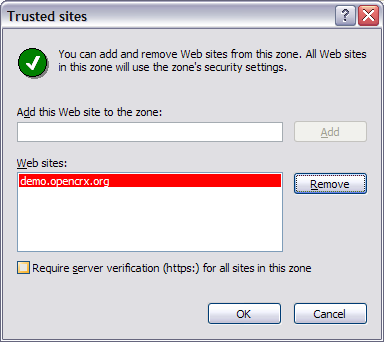
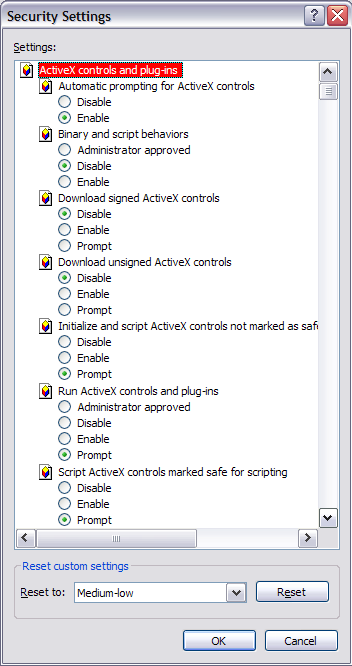
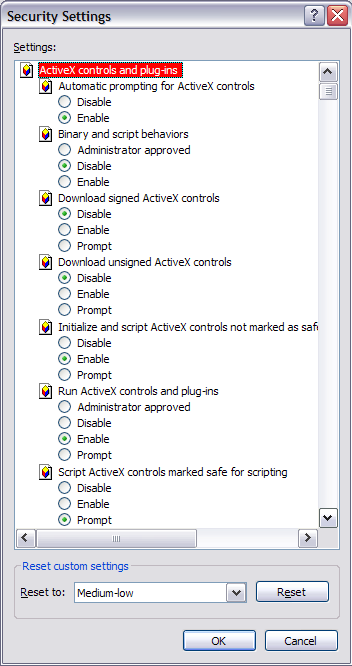

| ActiveX |
El uso de caracteristicas basadas en el Control ActiveX
Dependiendo de la caracteristica, algunos paquetes de software también tienen los siguientes requerimientos:
| Caracteristica | Requerimiento | Hints adicionales |
| MS Word XML Merge | Instalación en el cliente de MS Word 2000 ó superior | Sitios Confiables, Permisos ActiveX |
| MS Excel XML Merge | Instalación en el cliente de MS Excel 2000 ó superior | |
| Exportación de XML a MS Outlook | Instalación en el cliente de MS Outlook 2000 ó superior | |
| Importación de XML desde MS Outlook | Instalación en el cliente de MS Outlook 2000 ó superior |
Sitios Confiables (Internet Explorer)
Por razones de seguridad no recomendamos que se habilite los controles de ActiveX en la Zona de Internet. Es preferible agregar el sitio ejecutando openCRX a suZona de Sitios Confiables o a su zona local de Intranet (solo si el sitio realmente esta en la intranet) y enseguida habilitar los controles ActiveX en la zona correspondiente. Enseguida hay algunos ejemplos de como agregar el servidor de demonstración de openCRX(demo.opencrx.org) a su zona de sitios confiables y agregar un servidor local de openXRX(10.1.1.20) a la zona Local de intranet.

Permisos ActiveX (Internet Explorer)
Por razones de seguridad no recomendamos que se habilite los controles de ActiveX en la Zona de Internet. Es preferible agregarr el sitio ejecutando openCRX a suZona de Sitios Confiables o a su zona local de Intranet (solo si el sitio realmente esta en la intranet) y enseguida habilitar los controles ActiveX en la zona correspondiente como se muestra:
Donde encontral la configuración de ActiveX:
| Platforma | Navegador & Versión | Encontrar la configuración de ActiveX en ... | ActiveX habilitado (con warnings de pop ups) | ActiveX habilitado (sin warnings de pop ups) | |
|
Microsoft Windows |
Internet Explorer |
6.x | Herramientas > Opciones de Internet> Seguridad ... ... Custom levels > ActiveX controls and plug-ins |
 |  |